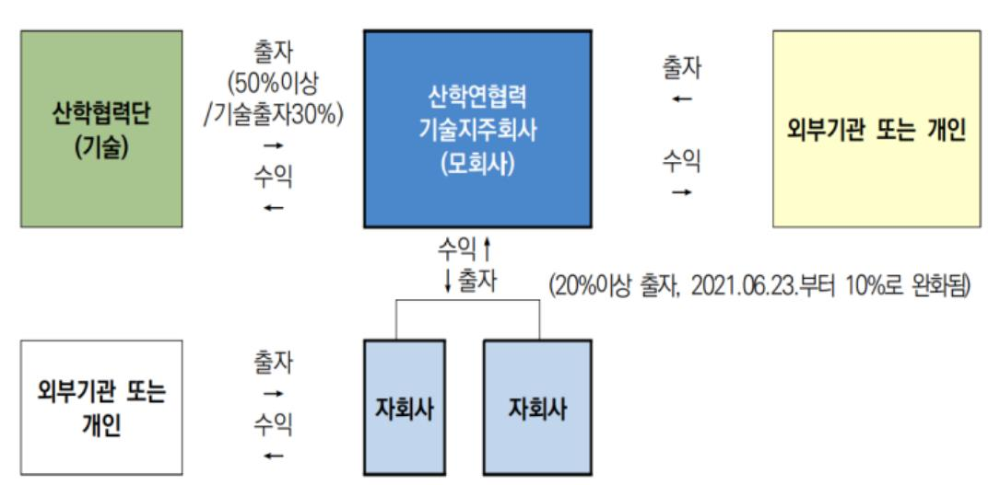
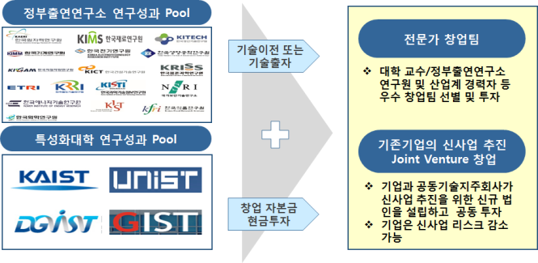
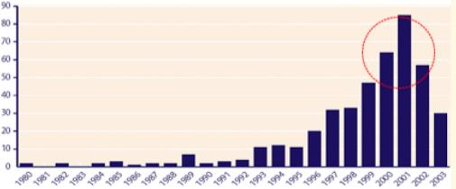

우리나라는 GDP 대비 세계 1~2위 비중으로 R&D에 투자하지만 연구가 사업화에 실사용되는 비율은 1% 수준인 'R&D 패러독스'를 겪고 있다. 대학도 연간 약 10조 원의 연구비를 쓰지만 기술이전 수입은 1,000억 원 정도로 전체의 1% 수준에 그친다. 본 사례연구는 2008년 제도 시행 이후 설립된 대학기술지주회사들의 유형별 현황·성과 비교와 미래과학기술지주·부산지역대학연합기술지주라는 공동설립형 우수사례, 그리고 영국 UCSF와 독일 EXIST·HTGF 등 해외 사례 분석을 통해 대학기술지주 활성화 방안을 도출한다.
- 본 연구는 우수한 성과를 달성하고 있는 대학기술지주회사들의 사례와 해외 대학사업화 우수지원 사례를 통해 기술지주의 활성화 방안 및 시사점을 찾고자 했다.
- 기술기반 기업에 출자해 성과를 창출하는 기술지주의 사업모델은 출자기업이 캐즘을 극복하고 성장하여 Value-Up 하는 것이 중요하다.
- 이를 위해서는 전문인력 확대, 제도개선, 자본금·펀드 확보와 같은 정량적 지원이 필요하다.
- 아울러 창업프로그램·창업보육센터 운영과 공동·후속투자 관련 AC·VC와의 투자기관 네트워크 확장 같은 정성적 노력도 함께 필요하다.
- 이러한 사례분석을 통해 대학기술지주를 기술사업화 생태계의 주요 보육·투자기능 자원으로 활성화하는 방안에 대한 논의와 연구가 지속되기를 기대한다.
1. 서론 — 수도권에 쏠린 창업생태계와 R&D 패러독스
정부는 몇 년간 벤처창업 생태계 활성화를 위해 많은 정책을 지원해왔지만, 그 생태계마저 수도권에 집중되는 문제가 발생했다. 기술 창업기업의 수는 수도권과 비수도권이 60% 이상 차이를 보이고, 성장을 도와줄 벤처캐피탈의 수는 10배 이상 차이가 난다. 기업가치 1조 원 수준의 유니콘 기업은 지역에 한 개도 존재하지 않는다.
이런 상황에서 대학기술지주회사는 대학을 기업가형 대학으로 변화시킬 대학 차원의 주체다. 대학 재정에 기여하는 수익을 창출할 뿐 아니라, 민간 벤처캐피탈이 투자위험과 수익성 문제로 기피하는 대학 창업기업을 지원할 수 있는 최적의 대안이 될 수 있기 때문이다(김도성, 안성필, 2020). 우리나라는 2008년 기술지주회사 제도 시행 이후 2021년 6월 기준 총 78개의 기술지주회사가 운영 중이다. 하지만 활성화된 기술지주 대부분은 우수 대학이 출자한 수도권 기술지주이며, 지역에서는 여러 대학이 공동으로 출자한 공동기술지주회사들이 활성화되어 있다.
단독설립형은 대학의 자율성을 최대한 확보할 수 있고 중요 의사결정 시 대학 이익을 위한 핵심관계자 의견 반영이 용이하지만, 기술연계 사업화 협력이 어렵고 회계사·변리사·투자전문가 등 전문인력 확보가 어렵다(박민규, 2015). 반면 공동설립형은 대학 이외의 외부기관 또는 기업이 참여해, 단독으로는 부족한 재원을 공동 출자함으로써 한정된 재원과 전문인력 문제를 해결하는 모델이다(STEPI, 2014).

2. 이론적 배경 — J커브, 캐즘, 액셀러레이터, 신호이론
연구는 Howard Love의 스타트업 J-커브 모형(창업시작–시제품 출시–변화와 전환–비즈니스 최적화–스케일업–수익창출의 6단계)과 Moore의 캐즘 이론을 분석 틀로 삼는다. Moore(1991)는 혁신 수용 과정에서 수용자 범주 간 가치관 차이로 '캐즘'이 발생하며, 특히 조기수용자(Early adopters)와 조기다수자(Early majority) 사이의 간극에서 가장 뚜렷하게 나타난다고 보았다. 초기시장에서 주류시장으로 확장할 때 존재하는 이 단절을 어떻게 극복할 것인지가 기술기반 기업에 매우 중요하다.
액셀러레이터는 2005년 미국 Y-Combinator를 최초로 보는 비교적 새로운 현상으로, 선발한 스타트업이 초기 단계의 난관을 극복해 독립적인 사업체로 안착하도록 돕는 기관이다. 그 사업구조는 자금구조, 전략적 목표집중, 선발과정, 보육프로그램, 네트워크로 이루어진다(Miller & Bound, 2011). 기술이전 측면에서는 법적 모델·행정적 모델·마케팅 모델 중 STP 등 마케팅 원리를 적극 적용하는 마케팅 모델이 가장 적극적인 형태이며, 보유기술을 홍보하는 공급추동형보다 잠재 수요기업을 발굴하는 수요견인형이 더 효과적이라는 연구가 있다(황현덕, 정선양, 2015). 마지막으로 신호이론 관점에서, 정보가 부족한 스타트업 투자에서는 벤처캐피탈들이 투자 네트워크를 이루어 공동투자를 함으로써 정보 비대칭성을 해소하며, 더 많은 네트워크를 가진 벤처캐피탈이 더 나은 회수 성과를 보인다(Abell et al., 2007).
3. 국내 및 해외사례 비교
3.1 국내 기술지주회사 현황 및 성과 비교
기술지주회사를 자본금 규모별로 나누어 3년간(2019~2021) 성과 평균을 보면, 자본금 60억 원 이상 기술지주들이 전담인력 수(9.1인), 자회사 수(36.2개), 출자금, 회수·수익 현황 모두에서 가장 우수했다. 설립유형별로는 단독기술지주 61개, 공동기술지주 10개(59개 대학 참여), 그리고 신기술창업전문회사 형태 기술지주 1개(미래과학기술지주 등)로 구분해 비교했다.
| 구분(평균) | 단독기술지주 (61개) | 공동기술지주 (10개) | 신창사기술지주 (1개) |
|---|---|---|---|
| 인력 평균 | 2.4명 | 6.7명 | 10명 |
| 자본금 평균 | 20.4억 원 | 82.8억 원 | 150억 원 |
| 펀드결성 현황 | 33개 지주(49.3%) | 7개 지주(70%) | 1개 지주(100%) |
| 액셀러레이터 등록 | 14개(22.9%) | 6개(60%) | 1개(100%) |
| 자회사 설립수 평균 | 13.4개 | 35.4개 | 79개 |
| 3개년 회수금 평균 | 2.14억 원 | 3.11억 원 | 39.18억 원 |
<표 9·10> 기술지주 설립유형별 현황 및 성과(21.12.31 기준). (출처: 산학연협력기술지주회사 운영현황 조사보고서 2019~2021, 저자 추가)
이 분석은 모수가 작고 변수를 통제하지 못해 통계적 의의를 가질 수는 없지만, 세 가지 가능성을 추정할 수 있었다. 첫째, 기술지주회사의 성과는 출자 대학의 창업자 수, 특허 출원·등록 수, 기술이전 건수와 무관했고 자본금, 인력 현황, 펀드결성 금액이 성과에 더 영향을 미친다. 둘째, 공동기술지주는 단독대학기술지주보다 평균적으로 우수한 성과를 보인다. 셋째, 공동기술지주는 단독 기술지주에 비해 기업에 대한 현금출자가 활발했는데, 이는 대부분 지역에 위치한 공동기술지주가 지역 스타트업 투자기관으로서의 역할을 수행하고 있음을 보여준다.
3.2.1 공동기술지주 우수사례 ① 미래과학기술지주
2013년 10월 KAIST, GIST, DGIST, UNIST 등 4개 과기특성화대학이 공동기술지주회사 설립 협약을 체결하고 2014년 3월 17일 법인등기를 했다. 미래과학기술지주는 2014~2019년 초 고유계정 기반으로 총 44개 회사에 76억 원을 투자했고, 이들의 우수한 성장을 바탕으로 2018년 12월 한국모태펀드 교육계정을 통해 첫 펀드를 조성한 이후 2022년 말까지 총 5개 펀드(447.5억 원 규모)를 조성, 총 95개 회사에 289.5억 원을 투자했다. TIPS 운영사로서 총 34개 자회사에 TIPS 매칭을 연계하기도 했다.
우수 출자사례로는 2015년 10월 2억 원을 투자한 UNIST 1호 교원창업 기업 클리노믹스가 2020년 12월 4일 코스닥에 상장하며 투자원금 대비 약 35배의 회수 실적을 거뒀고, 초기투자·TIPS를 지원한 스탠다드에너지는 대용량 에너지저장장치(ESS)용 이차전지를 개발하며 롯데케미칼로부터 650억 원의 후속투자를 유치했다.

2018년부터 한국과학기술지주와 함께 주관한 '공공연구성과 확산 및 실용화 사업'은 매년 우수 창업기업을 50건 이상 선발해 멘토링, 기술이전 매칭, 투자, 후속지원까지 기술창업 전주기를 지원했다. 이 프로그램을 통해 미래과학기술지주는 총 28개 기업에 약 80억 원을 투자했고, 투자기업들은 이후 약 600억 원의 후속투자와 360억 원의 R&D 자금을 확보했다. 네트워크 측면에서는 약 30개 자회사가 약 30개 투자기관과 140억 원 수준의 공동투자를 진행했고, 200여 개(중복 포함) 투자기관에 4,000억 원 이상의 후속투자를 연계했다.
3.2.2 공동기술지주 우수사례 ② 부산지역대학연합기술지주
부산연합기술지주회사는 '2030년 부산을 세계 30위 글로벌 혁신도시로 도약'시키기 위한 'TNT(Talent and Technology) 2030'의 핵심사업으로, 부산지역 16개 대학과 부산테크노파크가 주주로 참여하고 부산광역시 출연금을 더해 2015년 9월 설립됐다. 현재 자본금은 162억 원이다. 2016년 부산연합 제1호 개인투자조합을 시작으로 총 5개 펀드를 조성해 95개 회사에 투자했으며, 최근 4년간(2019~2022) 49개 회사에 약 100억 원을 투자했다. TIPS 운영사로서 17개 회사에 투자·팁스 지원을 연계했고, 부울경 지역 스타트업을 대상으로 멘토링·네트워크·글로벌 역량·투자를 종합 지원하는 'FLY for Start-up'과 10억 이상 스케일업 투자를 지원하는 'FLY for Scale-up' 프로그램을 운영한다.
부산연합기술지주의 자회사 출자 성과(95개)는 같은 지역 다른 모든 기술지주의 합계보다 우수하다. 단독기술지주 중에서도 자본금 상위권인 부산대기술지주(자본금 79억 원, 자회사 24개)와 비교해도, 공동으로 설립된 부산연합기술지주가 짧은 기간 내에 더 우수한 성과를 달성하고 있다.
3.3 해외의 대학기술사업화 사례 — 영국 UCSF와 독일 EXIST·HTGF
영국은 1985년 이후 대학과 연구기관이 기술이전 전담조직을 설립해 운영해왔고, 이 조직들은 기술이전·컨설팅만이 아니라 창업보육, 기업 설립·투자를 동시에 수행하는 통합형 기술사업화 지원 회사로 발전했다. 그 발전에 가장 큰 영향을 준 것이 1999년 지원이 결정된 UCSF(University Challenge Seed Fund)다. UCSF를 통해 31개 대학과 6개 연구기관으로 구성된 15개 투자조합이 결성됐고 2001년 5개가 신규 결성됐다. 지원받는 대학은 전체 펀드의 25%를 자체 조달해야 하고, 대학 보유 기술의 사업화 기업 투자에만 사용할 수 있으며 한 기업당 투자 상한은 25만 파운드(약 4.5억 원)였다. 현재는 정부지원이 중단됐으나 대학이 자체 자금으로 UCSF를 지속 운영하고 있어, 정부지원으로 시작해 대학으로 자연스럽게 옮겨간 사례로 볼 수 있다.

독일은 산학연을 통한 창업 지원 프로그램 EXIST(1997년 시작)로 대학·연구소의 창업보육센터 육성, 신생기업 자금지원, 고도기반기술 창업 유도라는 3개 지원 라인을 운영하며 현재 142개 대학을 지원하고 있다. 여기에 정부-민간 합작펀드 HTGF(High Tech Growth Fund)가 기존 VC가 잘 투자하지 않는 초기 단계(Seed Stage) 스타트업에 약 50만 유로(약 6억 7,000만 원)를 투자하며 주식지분 15%를 취득하는 방식으로 후속지원한다. HTGF는 2005년부터 680개 스타트업에 투자해 외부 투자자로부터 40억 유로가 넘는 자본 모집, 1,900회 이상의 후속 자금 조달, 160개 이상의 엑시트를 달성하며 독일 벤처투자 규모 1위 펀드로 자리 잡았다. HTGF의 목적은 수익률이 아니라 혁신스타트업 발굴과 후속투자 유도에 있다는 점에서, 우리나라 한국벤처투자의 모태펀드와 유사하면서도 정부기관이 투자 자금을 직접 운용한다는 차이가 있다.
4. 결론 및 시사점
한국의 기술지주회사는 자본금과 펀드 결성금이 많고 인력이 많은 유형일수록 우수한 성과를 보였다. 기술지주 활성화를 위해서는 인력 확보, 출자지원을 위한 자본금 확대와 전용펀드 지원 확대, 그리고 자회사 지분 의무출자 같은 제도의 개선이 필요하다. 다만 본 연구는 연관 대학이 보유한 기술의 우수성, 창업자들의 기업가정신 등 질적 부분을 측정하지 못한 상태에서 비교했고, 복잡계인 창업·투자생태계의 다양한 변수를 통제하지 못해 통계적 의의를 가지지 못하는 추정이라는 한계가 있다.
- 정량적 지원: 자본금·펀드결성 규모·전문인력이 성과와 정(正)의 관계를 보인 만큼, 인력 확보와 자본금 확대, 전용펀드 지원, 지분 의무보유 조항 완화 등 제도개선이 우선 과제다.
- 정성적 노력: 액셀러레이터 사업, 공공연구성과 확산 사업, 대학기술경영(TMC) 사업 등에 대한 지원 확대를 통해 기술기반 스타트업이 캐즘을 극복하고 Value-Up 하도록 도와야 한다.
- 해외 사례의 함의: 영국의 통합형 기술사업화 지원회사 사례는 기술지주와 창업보육센터의 연계·단일화가 하나의 방안임을 보여주고, 독일 HTGF는 수익률이 아닌 창업 활성화를 목적으로 정부가 투자금을 직접 운용해 Funding Gap을 해소하는 모델을 제시한다.
- 생태계 관점: 대학기술지주를 기술사업화 생태계의 주요 보육·투자기능 자원으로 활성화하기 위해, 정부와 지자체의 재원 마련·제도개선과 함께 대학 간 네트워크 및 투자생태계 네트워크의 지속적 확장이 필요하다.